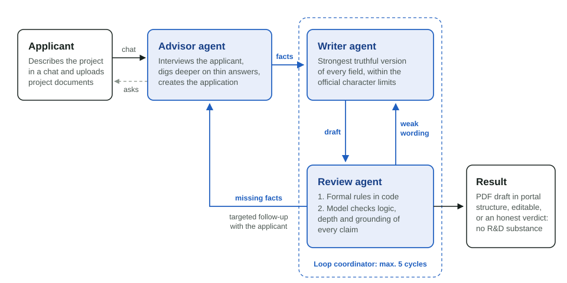
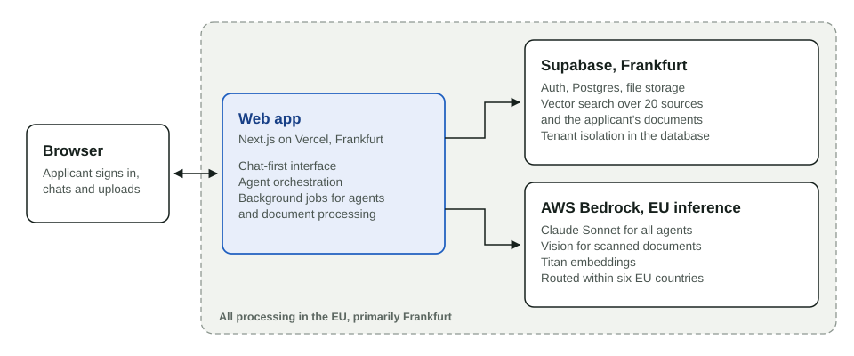
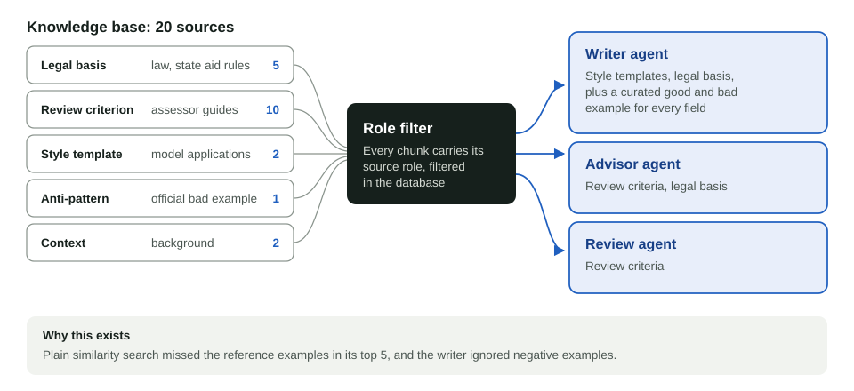
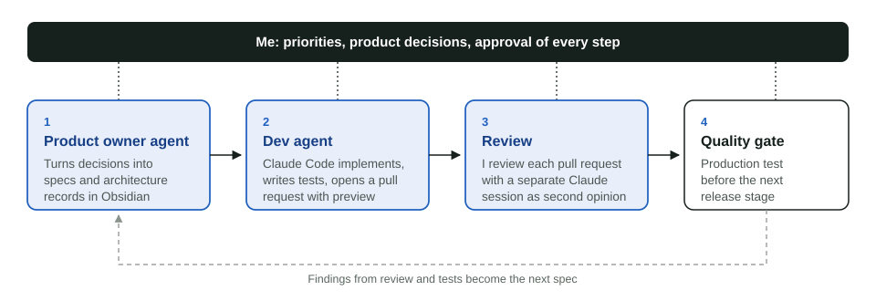

RNDRDY
An AI system that drafts German R&D tax credit applications (Forschungszulage) through a loop of specialised agents.
- Role
- Solo founder: product, architecture, build
- Timeline
- Since September 2025
- Status
- Private beta, first production run
- Stack
- Next.js, Supabase, AWS Bedrock (Claude), Vercel

The problem
Germany's research allowance (Forschungszulage) reimburses a share of eligible R&D costs. To claim it, a company first needs a certificate from the BSFZ, granted on the basis of a written project description.
That description decides the outcome. It has to show novelty, technical risk and a clear line against the state of the art, in the language assessors expect. Specialised consultants usually work for a success fee of 15 to 25 percent of the grant and focus on larger projects. Many smaller R&D projects in the Mittelstand never get an application at all.
What I built
RNDRDY starts with a conversation. The applicant describes the project in a chat and uploads existing documents such as project descriptions or specifications; scans are read with a vision model. The advisor agent works like a focused interviewer: it digs deeper on thin answers and creates the application once it has enough substance.
The writer agent then drafts every field to the official portal structure and character limits. The review agent simulates the official assessment and routes each finding: weak wording goes back to the writer, which regenerates only the flagged sections; missing facts go back to the advisor, which reopens the chat for a targeted follow-up. A loop coordinator runs up to five cycles per round and keeps the applicant informed.
The result is a PDF in the structure of the official portal, which the applicant can still edit before submitting. If a project lacks fundable R&D substance, the system says so openly.
Architecture

Key decisions
-
Multi-agent from the first release
Quality comes from the review step, so the full loop of advisor, writer and reviewer was part of the first release. It is the core of the product and shaped the architecture from day one.
-
Strongest truthful version, checked by an independent reviewer
The writer formulates each project as convincingly as possible, strictly within the facts the applicant supplied, like a lawyer presenting a client's case. The review agent is the counterpart: it checks that every claim traces back to the conversation or the applicant's documents and flags overclaiming as a rejection risk.
-
Rules in code, judgement in the model
Everything that can be checked deterministically, such as character limits, formal portal rules and banned marketing language, runs as code before and after each model call. The model only judges what needs judgement: the logic of the argument, depth and grounding.
-
Retrieval by source role
In a smoke test, plain similarity search left the reference examples outside the top five results, and the writer agent ignored negative examples. I tagged all 20 sources with one of five roles and filter by role in the database. Each agent now receives exactly the material its task needs (Fig. 3).
-
Language as a guardrail
Toward the applicant, the system never labels a draft as eligible. Eligibility is the assessor's decision, and advice close to tax consulting is regulated in Germany. Drafts are described as improvable through further iterations.

How I build it
I act as product owner and architect. A product owner agent turns my decisions into feature specs and architecture decision records in an Obsidian vault. A dev agent in Claude Code implements each spec, writes tests and opens a pull request with a preview deployment. I review every pull request, with a separate Claude session as second opinion. Quality gates with production tests close every release stage.

Open questions I am working on
When does a multi-agent review loop converge, and when does it start to circle? And how can a system check reliably that every statement in a draft is backed by a fact the applicant supplied?
Where it stands
- The first release is complete and live, from login to PDF export, documented in 8 architecture decision records and covered by more than 150 automated tests.
- The first real test case is RNDRDY itself: the system is drafting the research allowance application for its own development.
- Generated drafts are evaluated against the official positive and negative examples and the assessor guidelines.
Next: a pilot with a first external company, then measured results on this page.